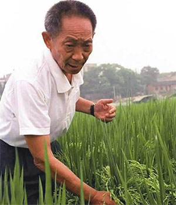

袁隆平
袁隆平（1930年9月-），江西省九江市德安县人，毕业于西南农学院（现西南大学），中国杂交水稻育种专家，“共和国勋章”获得者，中国研究与发展杂交水稻的开创者，被誉为“世界杂交水稻之父”。
1995年当选中国工程院院士，2000年获得国家最高科学技术奖，2006年当选美国国家科学院外籍院士。袁隆平先后成功研发出“三系法”杂交水稻、“两系法”杂交水稻、超级杂交稻一期、二期，与此同时，提出并实施“种三产四丰产工程”。2018年被党中央、国务院授予改革先锋称号。

荣誉记录
荣誉奖项
2018-09-08 未来科学大奖生命科学奖系统性地研究水稻特定性状的分子机制和采用新技术选育高产优质水稻新品种中的开创性贡献 （获奖）
2016-10-03 第一届 吕志和奖—持续发展奖 （获奖）
2015 第十四届世界杰出华人奖 （获奖）
2014-01-10 国家科学技术进步奖、特等奖 （获奖）
2011 马哈蒂尔科学奖 （获奖）
2010-03-24 法国最高农业成就勋章 （获奖）
2008-03-30 中国著名科学家奖、2007影响世界华人终身成就奖 （获奖）
2007 十大经济年度特别荣誉奖 （获奖）
2004-10 世界粮食奖 （获奖）
2004-09 袁隆平获得泰国国王金镰奖 （获奖）
2004-05 袁隆平获得沃尔夫奖，以色列总统为其颁奖 （获奖）
2001-08 拉蒙·麦格赛赛奖 （获奖）
2001-02 首届国家最高科学技术奖 （获奖）
1998 越光国际水稻奖 （获奖）
1997 杂种优势利用杰出先驱科学家称号 （获奖）
1996 日经亚洲奖 （获奖）
1994 何梁何利基金奖 （获奖）
1993 美国菲因斯特基金 （获奖）
1988-03-04 第三次获国际科学大奖 （获奖）
荣誉称号
2018-12-18 改革先锋 （获奖）
2018-11 100名改革开放杰出贡献对象 （获奖）
2010-04-28 荣登2010中国心灵富豪榜首富榜 （获奖）
2004 袁隆平获评中央电视台“感动中国·2004年度人物”十大人物之一 （获奖）
2002 袁隆平荣膺“科学中国人（2002）年度人物”称号 （获奖）
1997-08 获国际农作物杂种优势利用“杰出先驱科学家”荣誉称号 （获奖）
1989 被评为中国先进工作者 （获奖）
1984 获国家级有突出贡献的中青年专家称号 （获奖）
1979-12 国务院授予袁隆平中国先进科技工作者与中国劳动模范的称号 （获奖）
